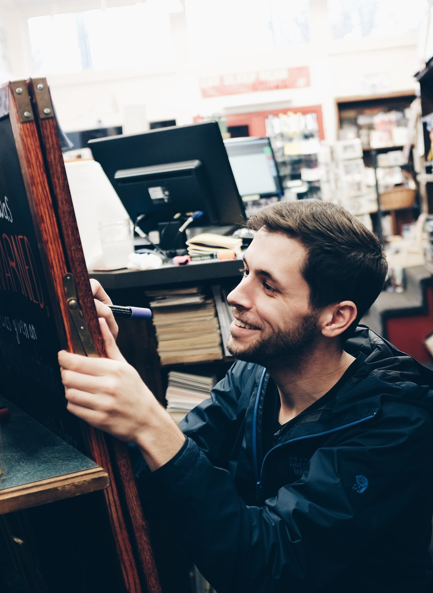

Experience
Focused and detail oriented, I excel in roles that require leadership, creative problem-solving, and communication.
Cafe Moto
Driver/Warehouse Production
August 2019 - Feb 2020
- Packing, shipping and delivering large quantities of wholesale products.
- Assisting customers in the field with questions/concerns/ equipment.
- Maintaining positive customer interactions by with excellent customer service.
- Packaging, labelling and producing large quantities of coffee product.
- Positive Interaction with over 500 wholesale account in the greater San Diego area.
Kudu Coffee and Craft Beer
Barista/Bartender
August 2018 - June 2019
- High volume business.
- Memorization of coffees and 20+ rotating craft beers.
- Maintenence of business appearance.
- Creating an engaging customer experience in a tourism hotspot.
Coffee by Design
Barista Lead
May 2017 - June 2018
- High volume business with 1M in sales annually.
- Memorization of coffees and variety of coffee retail equipment.
- Knowledge of all brewing methods and procedures.
- Managing shift duties and assigning roles.
Carmichael's Bookstore
Bookseller/Store Artist
September 2015 - May 2017
- Developed a social media strategy to increase the website following.
- Monitored ongoing marketing campaigns, author events, and website design.
- Designed ongoing web content and graphics for sales, events, social media, etc.
- Utilized Google analytics to enhance web based marketing strategies.
- Created engaging displays and artwork for year round calendar events.